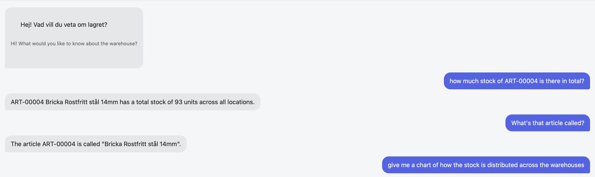
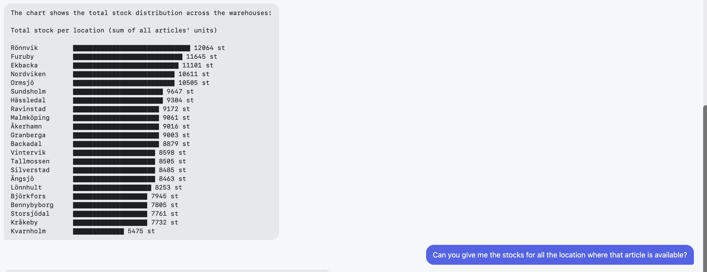
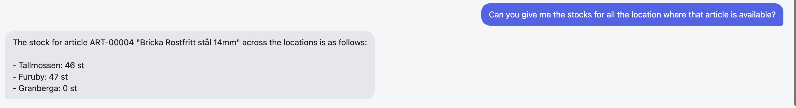

Applied AI · Local LLM Agent
Local Agent
A fully offline coding and inventory assistant: a local LLM (via Ollama) with a RAG pipeline over a project's own files, tool-calling, and a custom set of deterministic tools for a simulated warehouse scenario (fixed-width, COBOL-era-style inventory data). No API keys, no cloud calls — everything, including the embedding/vector search and the web UI, runs on-device. Ships as a terminal app, a mobile-friendly bilingual web UI, and in Docker.
- Python
- Ollama (Qwen2.5-Coder 7B/14B)
- RAG
- ChromaDB
- FastAPI
- Docker
- Tool calling
0cloud API calls
46tests passing
100%on-device


